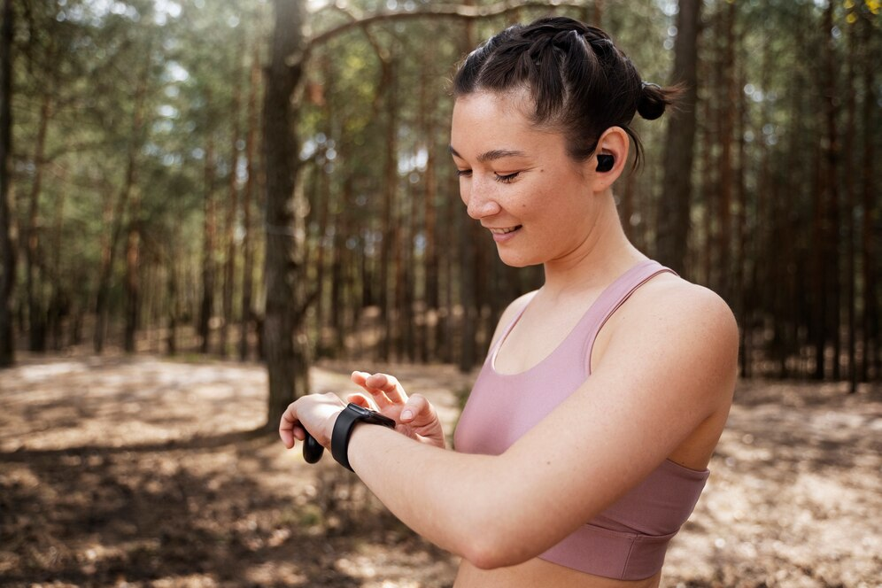

.png) Menu
MenuRobôs domésticos começam a ser adotados para tarefas diárias, prometendo mais conforto e eficiência nas residências.
Novo Smartphone Projetor 3D chega ao mercado, transformando a forma como vemos nossas telas!
Tecnologia 6G chega às metrópoles brasileiras, prometendo revolucionar a forma como vivemos e nos...
Empresa lança relógio inteligente capaz de monitorar a saúde mental, oferecendo insights valiosos para...
Escolas adotam a tecnologia VR para proporcionar experiências imersivas, transformando a aprendizagem trad...

Protótipo de veículo voador é apresentado, marcando o início da era dos transportes aéreos pessoa...
Plataforma de videoconferência apresenta nova função de hologramas, tornando as chamada...

Nova geração de consoles de videogame é lançada, trazendo gráficos ultra-realistas e experiên...

Projeto busca oferecer internet de alta velocidade em áreas remotas através de satélites.
Destaques de Inteligência Artificial
Empresa surpreende o mundo ao anunciar um algoritmo capaz de prever eventos futuros com alta precisão.
Em um avanço surpreendente da inteligência artificial, uma empresa anuncia o desenvolvimento de um algoritmo capaz de prever eventos futuros com notável precisão. Descubra como essa tecnologia está desafiando as fronteiras da previsão e quais são as implicações para diversas áreas, desde finanças até pla...

Dispositivo portátil promete traduzir instantaneamente diferentes idiomas, facilitando a comunicação global.
Em um mundo cada vez mais conectado, a comunicação sem fronteiras é essencial. Nesse contexto, um dispositivo portátil surge como um verdadeiro herói linguístico, prometendo quebrar as barreiras idiomáticas instantaneamente. Imagine poder se comunicar fluentemente em qualquer lugar do mundo, indepe...
Criados para auxiliar idosos, robôs de companhia ganham popularidade, oferecendo suporte emocional e físico aos usuários.
A tecnologia não só avança, mas também busca tornar a vida mais significativa para todas as gerações. No cenário atual, os robôs sociais, projetados especialmente para oferecer apoio e companhia aos idosos, estão ganhando destaque. Mais do que meros assistentes, esses robôs são programados para f...
Aplicativo utiliza inteligência artificial para ajudar usuários a manterem o foco e aumentarem a produtividade no dia a dia.
No turbilhão da vida moderna, onde distrações são abundantes, um aplicativo inovador surge como um aliado indispensável para quem busca maior concentração e eficiência no cotidiano. Utilizando avançados algoritmos de inteligência artificial, este aplicativo promete mais do que simplesmente gerenci...